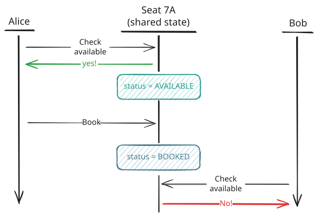
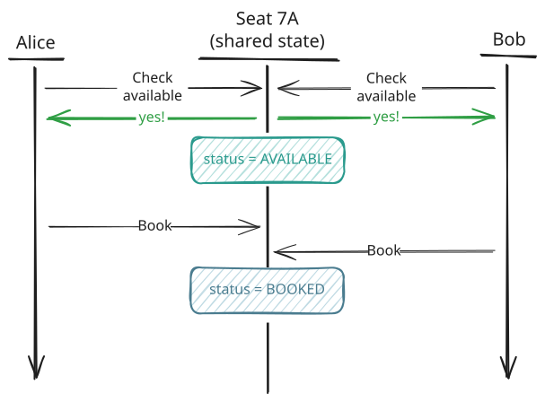
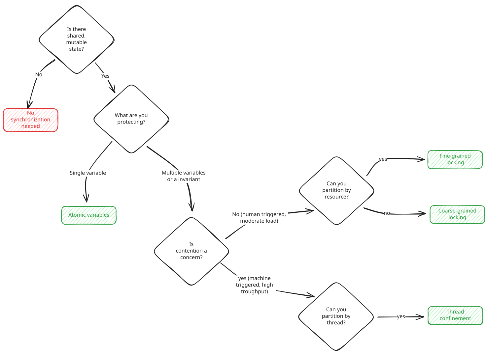

Concurrency
Correctness
Learn how to ensure multiple operations succeed or fail together.
🔒 Correctness is about preventing data corruption when multiple threads access shared state. Two threads both book the same seat. A counter that should be 1000 reads 847. A bank balance missing deposits. The danger isn't deadlock or performance, it's silently producing wrong results.
The Problem
You're building a ticket booking system for a concert venue. Users can browse available seats and book them. Simple enough. But what happens when two users try to book the same seat at the same time?
Alice wants seat 7A. Bob also wants seat 7A. Here's what should happen:

Booking Correct
Alice gets the seat, Bob gets an error. But here's what can happen in a concurrent environment:

Booking Broken
Both users checked availability before either completed their booking. Both saw the seat as available. Both proceeded to book it. Bob's write overwrote Alice's, and now Alice thinks she has a ticket but will show up to find Bob in her seat.
This is a correctness problem. Can multiple threads corrupt shared state? Yes—the check ("is the seat available?") and the action ("book it") happened as two separate steps. Another thread snuck in between them and invalidated the assumption. Alice checked, the answer was yes, but by the time she acted on that answer it was no longer true.
The same pattern appears throughout low-level design interviews. Rate limiters checking if under the limit before allowing a request. Connection pools checking if a connection is free before handing it out. Caches checking if there's room before adding an item. Whenever the validity of a check can change before you act on it, you have a correctness problem.
This article walks through four solutions to correctness problems, from simplest to most complex:
- Coarse-grained locking protects all related state with one lock
- Fine-grained locking allows concurrent access to independent resources while protecting related ones
- Atomic variables work for single variables but fail for multi-field invariants
- Thread confinement eliminates concurrency entirely for related data
Then we cover the two patterns where correctness bugs appear most often in interviews and how to apply the solutions to them.
- Check-then-act like booking a seat if available
- Read-modify-write like incrementing a counter
The Solutions
Every correctness problem can be solved with one of four approaches. We'll walk through them in order of frequency with which they appear in interviews.
Coarse-Grained Locking
As we saw in the intro, the ticket booking has a problem. The check ("is the seat available?") and the update ("mark it booked") can't be interrupted. If another thread sneaks in between them, we get double-bookings.
A lock solves this. When a thread acquires a lock, every other thread trying to acquire that same lock has to wait until the first thread releases it. Coarse-grained locking means using one lock to guard all booking operations. Every thread that wants to check or modify seat availability waits for the same lock.
coarse_grained_locking.py
Python
import threading
class TicketBooking:
def __init__(self):
self._lock = threading.Lock()
self._seat_owners = {}
def book_seat(self, seat_id: str, visitor_id: str) -> bool:
with self._lock:
if seat_id in self._seat_owners:
return False
self._seat_owners[seat_id] = visitor_id
return True
Python's threading.Lock is used with a with statement, which is a context manager. When you write with self._lock:, the lock is acquired at the start of the block and automatically released when the block exits, even if an exception occurs. This pattern ensures you never forget to release the lock.
When Alice's thread enters the locked section to book seat 7A, it acquires the lock. Bob's thread tries to book the same seat but has to wait because Alice holds the lock. Alice checks availability, sees the seat is free, marks it as hers, and exits. Only then does Bob acquire the lock. Now he sees that 7A is already taken, and his booking fails cleanly instead of overwriting Alice's.
The lock creates a critical section where only one thread executes at a time. The check and the update happen together with no possibility of interleaving.
In interviews, coarse-grained locking is your default choice for shared state. "I'll use a lock to ensure the check and booking happen atomically." It's simple, correct, and easy to reason about.
Challenges
The biggest mistake with coarse-grained locking is releasing the lock too early. Candidates see that the check is fast and the update is slow, so they try to hold the lock for as little time as possible. They lock just the check, release it, then do the update outside the lock. This completely breaks atomicity and brings us right back to the double-booking problem from the intro.
Here's what that looks like:
Broken: Lock released too early
Python
import threading
class TicketBookingBroken:
def __init__(self):
self._lock = threading.Lock()
self._seat_owners = {}
def book_seat(self, seat_id: str, visitor_id: str) -> bool:
# BROKEN: Lock released between check and update
with self._lock:
is_available = seat_id not in self._seat_owners
# Another thread can book the seat here!
if is_available:
self._seat_owners[seat_id] = visitor_id
return True
return False
Another common mistake is using different lock objects for operations that need to be atomic together. These are two completely different locks, so threads can hold them simultaneously. You think you're protecting the booking, but you're actually not coordinating at all.
Here's what that looks like:
Broken: Different lock objects
Python
import threading
class TicketBookingBroken2:
def __init__(self):
self._lock1 = threading.Lock()
self._lock2 = threading.Lock()
self._seat_owners = {}
# BROKEN: Different locks don't coordinate
def is_available(self, seat_id: str) -> bool:
with self._lock1:
return seat_id not in self._seat_owners
def mark_booked(self, seat_id: str, visitor_id: str):
with self._lock2: # Different lock!
self._seat_owners[seat_id] = visitor_id
The rule is easy to remember. All operations that maintain an invariant must be protected by the same lock. If you hold the lock during the check, you must still hold it during the update.
Coarse-grained locking is the right choice when your critical section is short (think milliseconds, not seconds) and contention is moderate. For most interview problems—especially anything where a human triggers the operation—this is exactly the situation you're in. A ticket booking system, a parking lot, even a rate limiter handling user requests, all fall comfortably within what coarse-grained locking handles without breaking a sweat.
The tradeoff is throughput. With a single lock guarding all booking operations, Bob has to wait even if he's booking seat 12B while Alice is booking seat 7A. Those operations don't actually conflict since they're different seats, but the lock doesn't know that. Under high load with many concurrent bookings, this becomes a bottleneck. Every thread queues up behind the same lock, even when they could safely run in parallel.
When you hit this wall, that's when you reach for fine-grained locking.
Read-Write Locks
There's a special case worth knowing about. Sometimes your workload is heavily skewed toward reads. A cache gets queried thousands of times per second but only updated once a minute. For example, a configuration store is read on every request but changed once a day. In these cases, coarse-grained locking is wasteful because readers block each other even though they're not modifying anything.
A read-write lock (sometimes called a shared-exclusive lock) solves this. It has two modes: read (shared) and write (exclusive). Multiple threads can hold the read lock simultaneously since they're just reading and can't corrupt each other's view. But the write lock is exclusive. When a thread wants to write, it waits for all readers to finish, then blocks everyone else until the write completes.
read_write_lock_cache.py
Python
import threading
class Cache:
def __init__(self):
self._lock = threading.RLock()
self._read_count = 0
self._read_count_lock = threading.Lock()
self._data = {}
def get(self, key):
with self._read_count_lock:
self._read_count += 1
if self._read_count == 1:
self._lock.acquire()
try:
return self._data.get(key)
finally:
with self._read_count_lock:
self._read_count -= 1
if self._read_count == 0:
self._lock.release()
def put(self, key, value):
with self._lock:
self._data[key] = value
Python's standard library doesn't include a read-write lock. The example shows a manual implementation using a counter and two locks. Production code often uses readerwriterlock from PyPI or simply sticks with a regular lock if the complexity isn't worth it.
Read-write locks shine when reads vastly outnumber writes. If you have 1000 read operations per second and 1 write per second, readers almost never block each other. But if reads and writes are roughly equal, the overhead of the fancier lock often makes it slower than a simple mutex.
In interviews, mention read-write locks when the interviewer asks about read-heavy workloads. "If reads dominate and writes are rare, I'd use a read-write lock so readers don't block each other. But if the ratio is close to 50/50, a simple mutex is usually faster."
Fine-Grained Locking
Coarse-grained locking serializes everything which is safe, but it's wasteful when operations don't actually interfere with each other. Alice booking seat 7A has nothing to do with Bob booking seat 12B. Why should Bob wait?
On the other hand, fine-grained locking uses multiple locks, where each lock protects a smaller piece of state. Instead of one lock for the entire venue, you have one lock per seat. Threads only block each other when they're competing for the same resource.
fine_grained_locking.py
Python
import threading
class TicketBookingFineGrained:
def __init__(self):
self._locks_lock = threading.Lock()
self._seat_locks = {}
self._seat_owners = {}
def _get_lock(self, seat_id: str) -> threading.Lock:
with self._locks_lock:
if seat_id not in self._seat_locks:
self._seat_locks[seat_id] = threading.Lock()
return self._seat_locks[seat_id]
def book_seat(self, seat_id: str, visitor_id: str) -> bool:
with self._get_lock(seat_id):
if seat_id in self._seat_owners:
return False
self._seat_owners[seat_id] = visitor_id
return True
Now Alice and Bob can book different seats simultaneously. Alice acquires the lock for 7A, Bob acquires the lock for 12B, and both proceed without waiting. Only when two threads want the same seat do they actually contend.
This pattern scales much better under load. If you have 1000 seats and 100 concurrent booking attempts spread across different seats, most of them proceed in parallel instead of queuing up.
Fine-grained locking is worth mentioning in interviews when the interviewer asks about scalability. "With coarse-grained locking we'd have contention issues at scale, so I'd use per-seat locks to allow concurrent bookings for different seats."
Challenges
The extra throughput comes at a cost as fine grain locking is a lot harder to get right and can introduce a lot of complexity.
Consider what happens when a user wants to swap seats with another user. You need to lock both seats to make the swap atomic. But if Alice tries to swap 7A for 12B while Bob simultaneously tries to swap 12B for 7A, you have a problem. Alice locks 7A and waits for 12B. Bob locks 12B and waits for 7A. Neither can proceed because each is holding what the other needs. This is deadlock, and they're a common source of bugs in concurrent code, especially when using fine-grained locking.
Broken: Can deadlock
Python
import threading
class TicketBookingDeadlock:
def __init__(self):
self._seat_locks = {}
def _get_lock(self, seat_id: str) -> threading.Lock:
if seat_id not in self._seat_locks:
self._seat_locks[seat_id] = threading.Lock()
return self._seat_locks[seat_id]
# BROKEN: Can deadlock if two threads swap in opposite order
def swap_seats(self, visitor1: str, seat1: str,
visitor2: str, seat2: str) -> bool:
with self._get_lock(seat1):
with self._get_lock(seat2):
# ... perform swap
return True
The fix is to always acquire locks in a consistent order. If every thread locks the "smaller" seat ID first (by string comparison), then Alice and Bob will both try to lock 12B before 7A. One of them gets it, the other waits, and eventually both complete without deadlock.
Fixed: Consistent lock ordering
Python
import threading
class TicketBookingFixed:
def __init__(self):
self._seat_locks = {}
def _get_lock(self, seat_id: str) -> threading.Lock:
if seat_id not in self._seat_locks:
self._seat_locks[seat_id] = threading.Lock()
return self._seat_locks[seat_id]
def swap_seats(self, visitor1: str, seat1: str,
visitor2: str, seat2: str) -> bool:
# Always acquire locks in consistent order to prevent deadlock
first = seat1 if seat1 < seat2 else seat2
second = seat2 if seat1 < seat2 else seat1
with self._get_lock(first):
with self._get_lock(second):
# ... perform swap
return True
Beyond deadlocks, fine-grained locking introduces practical overhead. You're creating locks dynamically, so the map holding them grows with each new seat. For a venue with a fixed number of seats this is fine, but for unbounded resources you might need to clean up locks that are no longer in use.
There's also a mental overhead. With one lock, you always know what's protected. With many locks, you need to carefully track which lock guards which data. It's easy to accidentally access shared state while holding the wrong lock, or no lock at all.
Here's a practical rule for interviews: if a human is triggering the operation, coarse-grained locking is almost always fine. Even a wildly popular ticket booking system with 10,000 users racing for seats won't have more than a few dozen hitting the lock at the exact same microsecond. A locked block of code handles that trivially. Engineers who have dealt with these systems in production have almost invariably been burned by an errant lock somewhere and the most senior of them will be very concerned with premature optimization.
Fine-grained locking matters when you're processing machine-generated traffic at scale. Like a connection pool handling thousands of database queries per second, or a cache serving tens of thousands of requests per second.
Atomic Variables
Locks work, but they're not free. When a lock is contended, threads waiting on it can't do anything useful—they're either spinning or parked by the operating system. For simple operations on a single variable, there's a lighter-weight alternative: atomic variables.
Atomic variables use special CPU instructions to perform read-modify-write operations in a single, uninterruptible step without needing a lock. The most common operation is compare-and-swap (CAS), which says "set this variable to the new value, but only if it currently equals the expected value." If another thread snuck in and changed the value between your read and your write attempt, the CAS fails and returns false instead of corrupting the data. You can then re-read the current value and retry if needed.
Consider tracking how many seats have been booked. With a regular integer, incrementing is unsafe because increment operations are actually three steps (read, add, write) that can interleave. With an atomic integer, the increment happens as one indivisible operation:
atomic_counter.py
Python
import threading
class BookingStats:
def __init__(self):
self._lock = threading.Lock()
self._booked_count = 0
def on_seat_booked(self):
with self._lock:
self._booked_count += 1
def get_booked_count(self) -> int:
with self._lock:
return self._booked_count
Python's Global Interpreter Lock (GIL) doesn't make operations atomic, and Python lacks built-in atomic primitives. The example uses a threading.Lock to simulate atomic behavior. For true lock-free atomics, you'd need a library like atomics or use multiprocessing.Value with its built-in lock.
Under low contention, they're significantly faster than locks. They're also a lot simpler to reason about for single-variable operations since there's no lock to forget to release.
For more complex updates, you'll use a CAS loop. Say you want to track the maximum number of concurrent bookings ever seen. You can't just set the value since another thread might have already set it higher. Instead, you read the current value, compute what you want to set, and attempt the CAS. If it fails (because another thread changed it), you loop and try again with the new value:
atomic_cas.py
Python
import threading
class ConcurrencyTracker:
def __init__(self):
self._lock = threading.Lock()
self._max_concurrent = 0
def update_max_concurrent(self, current: int):
while True:
with self._lock:
if current <= self._max_concurrent:
return
self._max_concurrent = current
return
Python lacks native CAS operations. The example uses a lock to simulate the behavior, checking the current value and only updating if it matches expectations. For true lock-free CAS in Python, you'd need ctypes to call platform-specific atomic instructions or use specialized libraries.
This pattern is called optimistic concurrency. You optimistically assume no one else will interfere, do your work, and only retry if that assumption was wrong. Under low contention most CAS attempts succeed on the first try, making this faster than acquiring a lock.
In interviews, reach for atomics when you have a single counter or flag that multiple threads update. "I'll use an atomic integer for the count since it's a single variable and atomics avoid lock overhead."
Challenges
The catch is that atomics only work for single variables. The moment you need to keep two pieces of state consistent with each other, atomics can't help you.
Consider what happens if you try to use atomics for the booking system. You might track seat ownership with an atomic reference:
Works for single seat, fails for multiple
Python
import threading
class TicketBookingAtomic:
def __init__(self):
self._lock = threading.Lock()
self._seat_owners = {}
# Works for single seat, but can't atomically book multiple seats
def book_seat(self, seat_id: str, visitor_id: str) -> bool:
with self._lock:
if self._seat_owners.get(seat_id) is None:
self._seat_owners[seat_id] = visitor_id
return True
return False
This actually works for booking a single seat! The compare-and-set operation atomically checks if the seat is available (null) and books it in one step. But what if you need to book two adjacent seats together, like 7A and 7B? You can't atomically update two separate atomic reference objects. One could succeed while the other fails, leaving you in an inconsistent state where you've booked half a pair.
Atomics work well for independent single-variable updates like counters, flags, or statistics where each update stands on its own. But the moment your correctness depends on multiple variables staying in sync with each other, atomics can't help you and you'll need to fall back to locks.
Atomics are great for statistics. The moment you're enforcing a business rule, you're usually back to locks.
Thread Confinement (Shared Nothing)
The simplest way to avoid synchronization bugs is to avoid sharing data between threads in the first place. If only one thread ever accesses a piece of data, there's no race condition possible. This is often called shared nothing or thread confinement.
The idea is straightforward: instead of having all threads compete for the same data, you partition the data so each thread owns its slice. In our booking system, Thread 1 could handle sections A-M, Thread 2 handles sections N-Z. Each thread has its own private seat map—no sharing, no locks needed.
This pattern shows up more often than you might expect. Dragonfly, a high-performance Redis alternative, partitions the keyspace across threads. Each key is assigned to exactly one thread, so most operations just dispatch to that thread without any locking. Actor systems like Akka confine state to individual actors. Database connection pools often give each thread its own connection.
The tradeoff is that you're exchanging synchronization complexity for architectural complexity. Operations that span multiple partitions (booking seats in two different sections) still require coordination. Load imbalance can become an issue if some partitions are hotter than others. And the confinement only works if it's strictly enforced—accidentally accessing another partition's data reintroduces all the race conditions you were trying to avoid.
For most LLD interview problems, thread confinement is overkill—coarse-grained or fine-grained locking will be sufficient. But it's worth mentioning if the interviewer pushes hard on scalability: "If we're hitting lock contention limits, we could partition the data and assign each partition to a dedicated thread."
Common Bugs
Synchronization bugs don't appear randomly. They cluster around specific patterns that show up again and again in interviews. Once you recognize the bug pattern, you know which solution to reach for.
Check-Then-Act
Check-then-act is the pattern we've been using throughout this article. You check a condition, make a decision based on that check, then act on it. The bug happens when another thread invalidates the check between when you read it and when you act on it.
The ticket booking system is check-then-act—you check if the seat is available, then book it if so. Rate limiters follow the same pattern, checking the request count before allowing a request through. Connection pools do too, verifying a connection is free before handing it out.
The distinguishing feature is that the action depends on the check still being true. If the check becomes false between reading it and acting on it, your action is now incorrect.
Here's what it looks like in a rate limiter:
Broken: Check and update not atomic
Python
class RateLimiterBroken:
def __init__(self):
self._request_counts = {}
self._max_requests = 100
# BROKEN: Check and update not atomic
def allow_request(self, user_id: str) -> bool:
count = self._request_counts.get(user_id, 0)
if count < self._max_requests:
self._request_counts[user_id] = count + 1
return True
return False
The bug is between the check and the update. Thread A reads count as 99, sees it's under the limit, and proceeds to update the map. But before it executes the update, Thread B also reads count as 99, sees it's under the limit, and proceeds to update. Both increment from 99 to 100. The user has now made 101 requests when the limit is 100.
The solution is to make the check and the act atomic. Coarse-grained locking works here:
Fixed: Check and update atomic
Python
import threading
class RateLimiter:
def __init__(self):
self._lock = threading.Lock()
self._request_counts = {}
self._max_requests = 100
def allow_request(self, user_id: str) -> bool:
with self._lock:
count = self._request_counts.get(user_id, 0)
if count < self._max_requests:
self._request_counts[user_id] = count + 1
return True
return False
Now Thread A enters the locked section, reads count as 99, checks the limit, increments to 100, and exits. Only then can Thread B enter. By the time it does, the count is already 100 and the request is correctly rejected. The read, check, and update all happen together with no opportunity for another thread to sneak in.
The pattern here is to lock on the thing you're checking, then act while holding that lock. Whether you use coarse-grained locking (one lock for all users), fine-grained locking (per-user locks), or thread confinement (partition users across threads), the core principle stays the same: the check and the action must happen atomically.
Examples
The same bug shows up across many LLD interview questions. Once you see the shape, you'll recognize it everywhere.
Connection Pool: Your pool has 10 connections. A thread checks if any connection is free, finds connection #7 available, and prepares to hand it out. Before it can mark #7 as in-use, another thread also checks, also sees #7 as free, and also hands it out. Now two requests are sharing one database connection, corrupting each other's queries.
LRU Cache with Max Size: Your cache holds at most 1000 items. A thread checks the size, sees 999 items, and proceeds to add a new one. Another thread does the same thing at the same time. Both add their items, and now you have 1001 items in a cache that was supposed to max out at 1000.
File Download Manager: A thread checks if a file is already being downloaded. It's not, so the thread starts the download. But another thread checked at the same time, also saw the file wasn't downloading, and also started a download. Now you have two threads downloading the same file, wasting bandwidth and potentially corrupting the output.
Parking Lot: A thread checks if spot #42 is empty, sees that it is, and proceeds to assign it to an incoming car. Another thread does the same check at the same moment for a different car. Both see the spot as empty, both assign their car to it. Two cars think they own the same spot.
Singleton (Lazy Initialization): A singleton is check-then-act where you're checking if the instance exists before creating it. The techniques are the same—lock the check and creation together. However, the underlying problem is scarcity (avoiding expensive creation), which we cover in the Scarcity article.
In every case, the structure is identical. You check some condition on shared state, then modify that state based on what you saw. The fix is always the same too. Wrap the check and the modification in the same lock so they happen together.
For most of these, coarse-grained locking is the right answer. Parking lots, file download managers, and LRU caches don't see enough concurrent operations to justify fine-grained locking—even a busy parking garage only has a car entering every few seconds. Connection pools are the exception. A pool serving thousands of database queries per second can benefit from per-connection locks since operations on different connections don't conflict and the throughput demands are high enough to make coarse-grained locking a bottleneck.
You don't need to name this pattern in an interview, what matters is recognizing the danger. When you see a conditional check followed by an action that depends on that check, ask yourself: "Could another thread change this between when I check it and when I act on it?" If yes, wrap both in a lock.
Say something like: "We're checking if the seat is available and then booking it, but another thread could book it between those two steps. I'll use a lock so the check and update happen together."
Read-Modify-Write
Read-modify-write is simpler than check-then-act. You read a value, compute something from it, and write the result back. There's no conditional branching, you always write. The bug happens when two threads read the same value, both compute from it, and both write back, causing one update to get lost.
The classic example is a counter. You read the current count, add one, and write it back. But count++ isn't a single operation, it's three: read count, add 1, write count. If two threads do this simultaneously, both might read 5, both compute 6, and both write 6. You've lost an increment.
Broken: Increment not atomic
Python
class RequestCounterBroken:
def __init__(self):
self._request_count = 0
# BROKEN: += is not atomic (read, increment, write)
def on_request(self):
self._request_count += 1
Thread A reads 5. Thread B reads 5. Thread A writes 6. Thread B writes 6. Two requests came in, but the count only went up by one.
The fix depends on what you're updating. For a single counter, use
a lock (Python doesn't have built-in atomic primitives)
:Fixed: Atomic increment
Python
import threading
class RequestCounter:
def __init__(self):
self._lock = threading.Lock()
self._request_count = 0
def on_request(self):
with self._lock:
self._request_count += 1
For anything beyond a simple increment—updating a balance, modifying a data structure, or keeping multiple fields in sync—you need a lock:
Lock for general read-modify-write
Python
import threading
class BankAccount:
def __init__(self):
self._lock = threading.Lock()
self._balance = 0
def deposit(self, amount: int):
with self._lock:
self._balance = self._balance + amount
def withdraw(self, amount: int):
with self._lock:
self._balance = self._balance - amount
Unlike check-then-act, the danger is losing updates entirely rather than acting on stale information.
Examples
Read-modify-write shows up whenever you're accumulating, tracking, or updating state based on its current value.
Hit Counter: You're counting page views. Two requests hit simultaneously and both read the current value of 1000, both add 1 to get 1001, and both write 1001 back. You're now at 1001 when you should be at 1002. You've lost a page view. Over millions of requests, your analytics are way off. Given it's a single variable, use an atomic long with an atomic increment operation.
Bank Account: A user deposits $50 from their phone while their $500 paycheck direct deposit hits at the same time. Both threads read the balance as $100. The phone deposit computes $100 + $50 = $150 and writes it. The direct deposit computes $100 + $500 = $600 and writes it. Final balance is $600 when it should be $650—the $50 deposit vanished. Use a lock around the read-add-write sequence so only one deposit runs at a time.
Metrics Aggregator: You're tracking response times with a running sum and count. Two requests finish at once and both read sum=5000ms and count=100. Both add their response time (say, 50ms each) and increment count. Both write sum=5050 and count=101. You should have sum=5100 and count=102, but one measurement is gone. Again, since it's multiple variables, use a lock to update sum and count together.
Inventory System: Two fans buy the last t-shirt simultaneously. Both read quantity as 1, both subtract 1 to get 0, both write 0. You've sold two shirts but only decremented once—now you've oversold and one fan gets a refund. You need a lock here because you're checking quantity before decrementing—that's check-then-act and read-modify-write combined.
When you see arithmetic on shared state (incrementing counters, updating balances, accumulating totals), ask yourself: "What happens if two threads do this at the same time?" If the answer is "one update gets lost," you need synchronization.
For a single variable, say: "I'll use an atomic integer since the increment operation is atomic." For multiple fields, say: "I'll use a lock so the read and write happen together."
Conclusion
Correctness problems follow predictable patterns. Once you recognize the shape, picking the right solution becomes mechanical.
When you spot shared mutable state in an interview, run through this decision tree:

Correctness Decision Tree
For most interview problems, you'll land on coarse-grained locking. A single lock around the critical section handles check-then-act and read-modify-write. It's simple, correct, and fast enough for anything a human triggers.
When you're writing concurrent code, ask yourself: "What happens if two threads execute this at the exact same moment?" If the answer involves lost updates, double-booking, or corrupted state, wrap the dangerous section in a lock. Keep the check and the action together. Use the same lock for all operations that share an invariant.
That's really all there is to it. The bugs are predictable, and so are the fixes.
Test Your Knowledge
Answer the question below to find your gaps.
Question 1 of 15
A ticket booking system checks if seat 7A is available, then books it. Two users try to book the same seat simultaneously. What is the primary correctness issue?
1
Check and book are separate steps that can be interrupted
2
The database will reject one transaction due to foreign key constraints
3
The system will deadlock when both users try to acquire the seat
4
The system needs a distributed lock across multiple servers